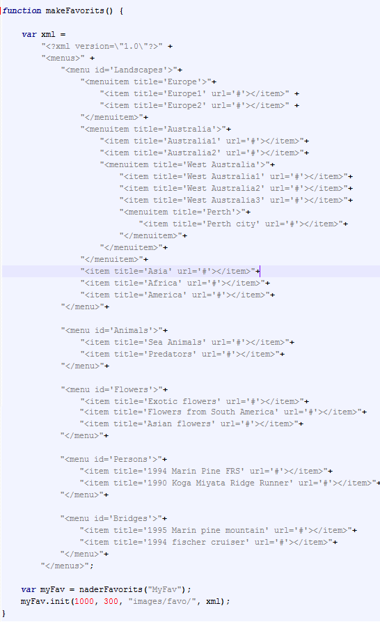
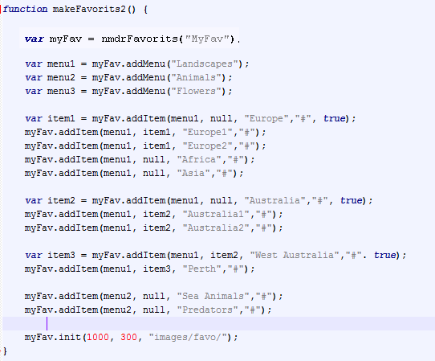

This is the nmdrFavorits component
Instructions
To initialize a nmdrFavorits use the following code:
As XML definition:

Or with function calls:


The constructor function takes 1 parameter: the id of the "div" which will be build as favorits menu
The method "init" takes 2 or 3 parameters: the width and height of menu and the location of img. The last optional parameter is used if you define menu as XML.